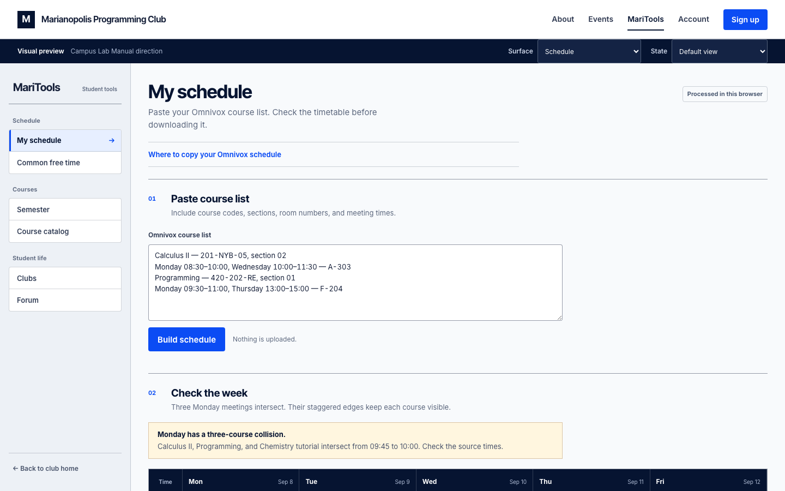
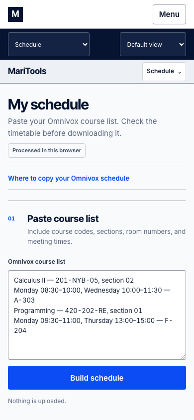
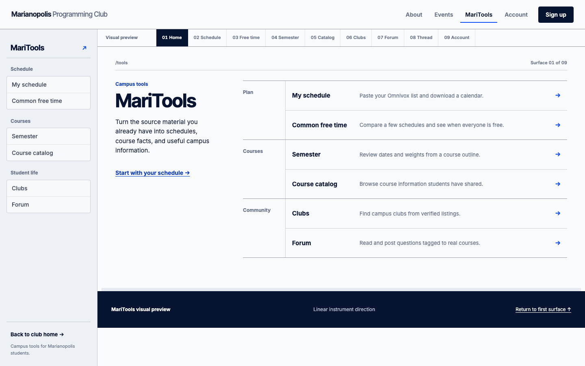
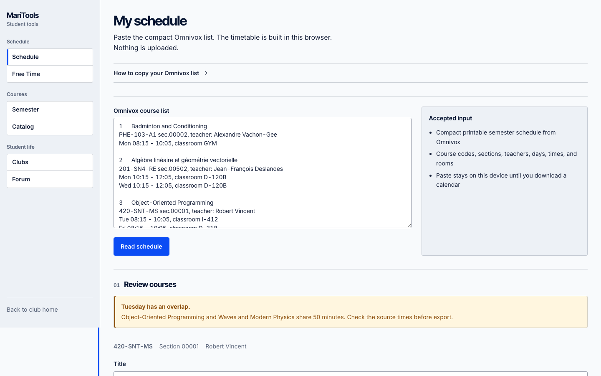
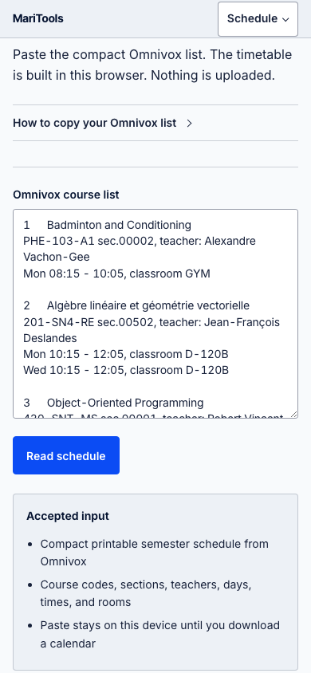
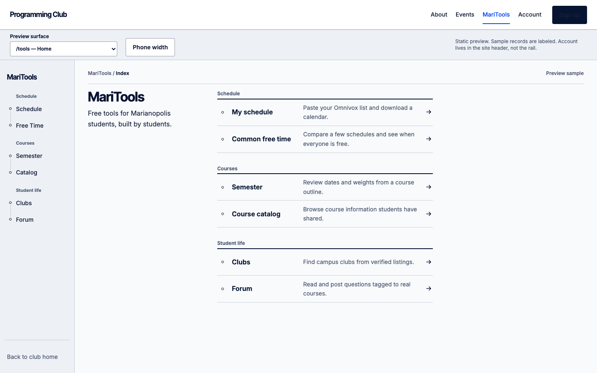
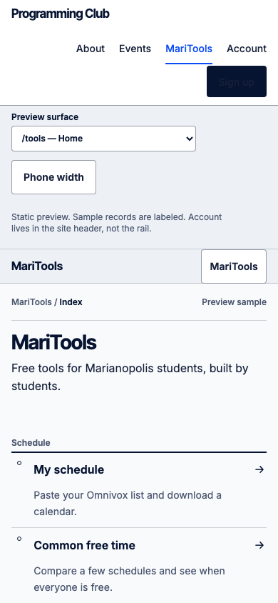

Candidate 1 · Codex gpt-5.6-sol · Round 2 polished
Campus Lab Manual
Grouped TOC mini-panels, mist sidebar, registrar week grid, electric blue signal.

Schedule desktop
Schedule mobileFour high-effort static previews from 2 Codex + 2 Grok agents. Each direction is a full 9-surface shell with grouped sidebar. No monospace fonts. Pick a candidate, open the live preview, use the surface picker inside each preview to walk every page.
Candidate 1 · Codex gpt-5.6-sol · Round 2 polished
Grouped TOC mini-panels, mist sidebar, registrar week grid, electric blue signal.

Schedule desktop
Schedule mobileCandidate 2 · Codex gpt-5.6-sol
Flat rail, hairline rules, inset active bar, Stripe-docs list density.

Schedule desktopCandidate 3 · Grok grok-4.6
When2meet-style multi-schedule paste, person labels, ruled gap rows.

Schedule desktop
Schedule mobileCandidate 4 · Grok grok-4.6
Narrow dot-nav rail, wide main, cool paper editorial tables.

Schedule desktop
Schedule mobile.impeccable/arena/maritools-visual-arena-frame.md.impeccable/arena/maritools-visual-cross-judge.md